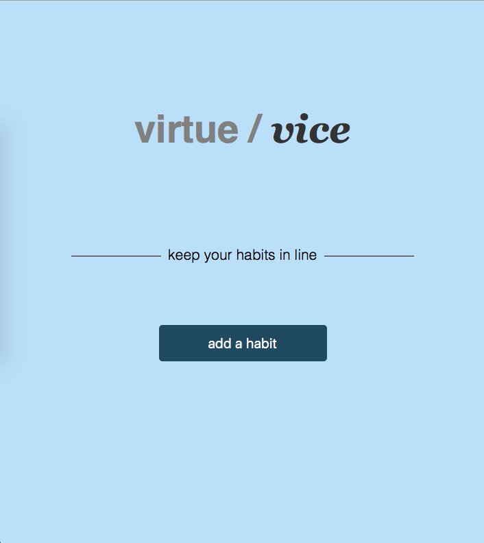
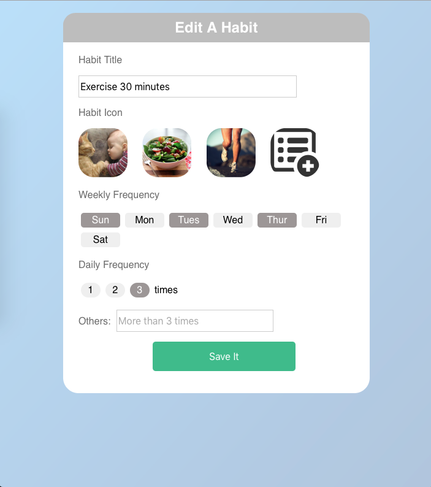
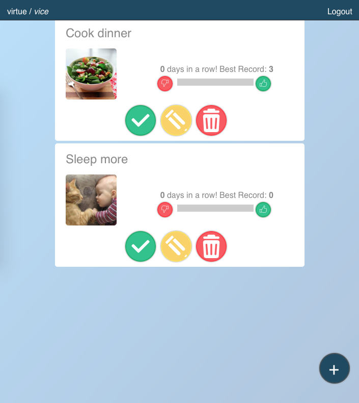

Henry is a undegraduate computer science student at University of California, San Diego.
Developed a habit tracker web application using HTML5 and JS on a 5-person team. Implemented user notifications and error tracking to ensure user efficiency. Additionally, coordinate the project using agile method to ensure deadlines and requiremenets were met.
  Check out the first iteration of the login page!
Check out the first iteration of the welcome page!Build an 8-bit mini CPU, a Finite State Machine BCD and a Gray Code Counter
Implemented an anagrams program using C and assembly code to read in data from files, process possible anagrams, and generate results according to the user's input. The program was tested with various data files through numerous iterations until an error-free result was achieved.
Responsible for executing the Tule Ponds Restoration Project, organizing camping and community service events, leading the troop, setting a good example, and helping younger scouts.
Strategically planned weekly meetings by preparing action plans, ensuring team productivity, and meeting goals. Also, oversaw the operation of each event.